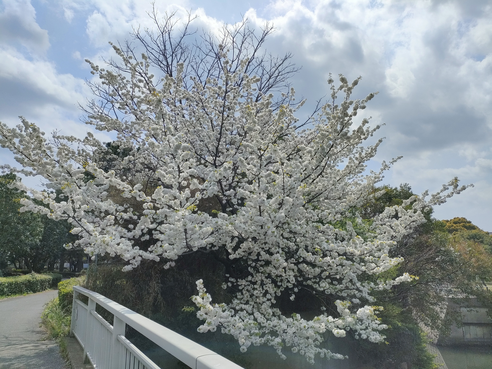
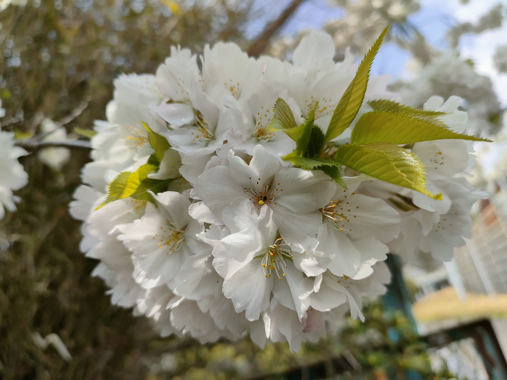
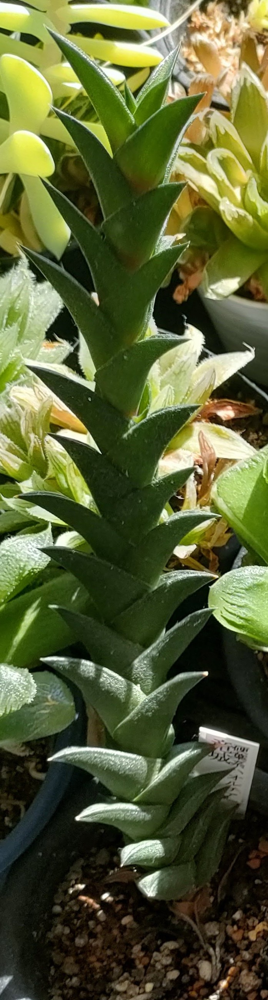

- 
- 
自己紹介
- 氏名
- 山田 太郎（ヤマダ タロウ）
- 職業
- エンジニア志望 / 職業訓練生
- ご挨拶
-
初めまして。現在、IT系の職業訓練校にてプログラミングやインフラ技術を学習しています。
日々の学習のアウトプットとして、Githubを活用しています。
スキルリスト
- 言語・技術
- HTML / CSS / SQL (Oracle) / Java (学習中)
- 資格
- ITパスポート / 普通自動車免許
好きなこと
植物育成、歴史（特に中国史）、散歩、プログラミング学習
育てている植物や好きな植物
- ハオルチア 竜城
- 
- ハオルチア 静鼓

好きな場所・街・公園など
- お気に入りの散歩コース
- 〇〇公園、〇〇庭園、昭和記念公園など、自然豊かな場所が好きです。
よく見ているYouTubeチャンネル
- 科学・技術系
- SCIENCE CHANNEL（THE MAKING）、サイエンスドリーム
- 歴史系
- 鳥人間 中国史三昧など